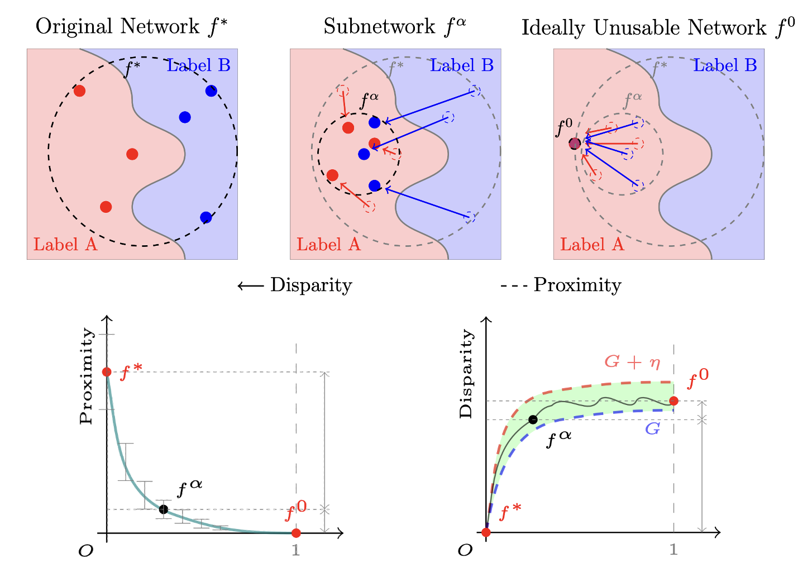

Zihan Wang
Building 78, University of Queensland, QLD 4072
About Me
I’m a first-year Ph.D. student at the School of Electrical Engineering and Computer Science, the University of Queensland, mentored by A/Prof. Guangdong Bai and Dr. Jason Xue. My research focuses on tackling real-world security & privacy issues of machine learning systems in a formally verifiable manner.
Research Interests
- Machine Learning: usage control, access control, model compression.
- Privacy Compliance and Enforcement: purpose limitation, right to be forgotten.
News
- [Mar. 2024] Our paper on neural network usage control is accepted by Oakland S&P’24.
- [Mar. 2024] Our paper on algorithmic purpose limitation is accepted by USENIX Security’24.
- [Jan. 2024] Our paper on knowledge distillation is accepted to WACV’24.
- [Dec. 2023] Our paper on deep data hiding is accepted to IEEE TCSS’23.
- [Aug. 2023] Our paper on formalizing neural network perturbation is accepted to ICFEM’23.
- [Sep. 2022] Our paper on multi-modal models membership inference is accepted to NeurIPS’22.
Selected Publications
-
 Oakland'24IEEE Symposium on Security and Privacy (Oakland S&P), Mar. 2024.
-
USENIX'24USENIX Security, Mar. 2024.
-
 TCSS'23
IEEE Transactions on Computational Social Systems (TCSS), Dec. 2023.
TCSS'23
IEEE Transactions on Computational Social Systems (TCSS), Dec. 2023. -
 NeurIPS'22
Neural Information Processing Systems (NeurIPS), Sep. 2023.
NeurIPS'22
Neural Information Processing Systems (NeurIPS), Sep. 2023.